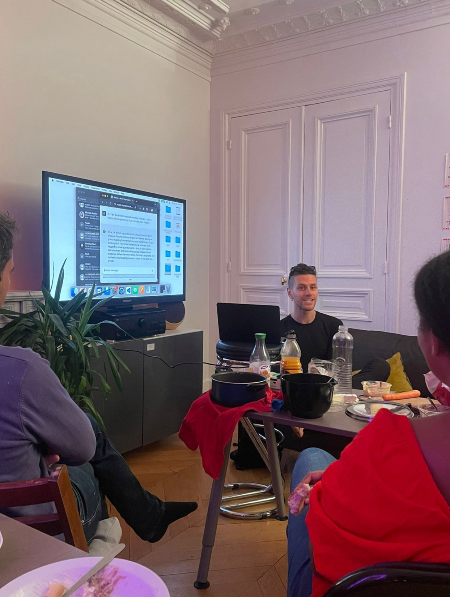
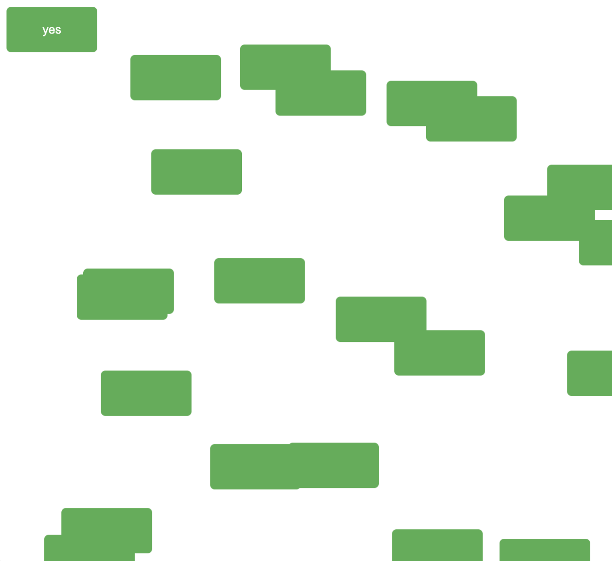
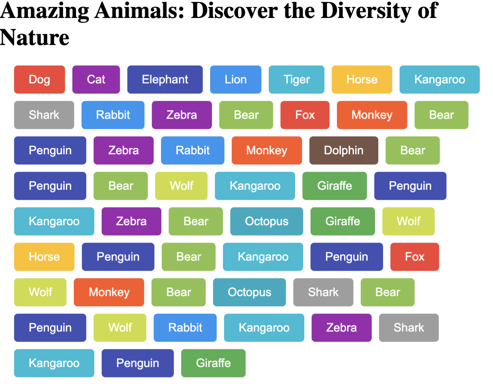
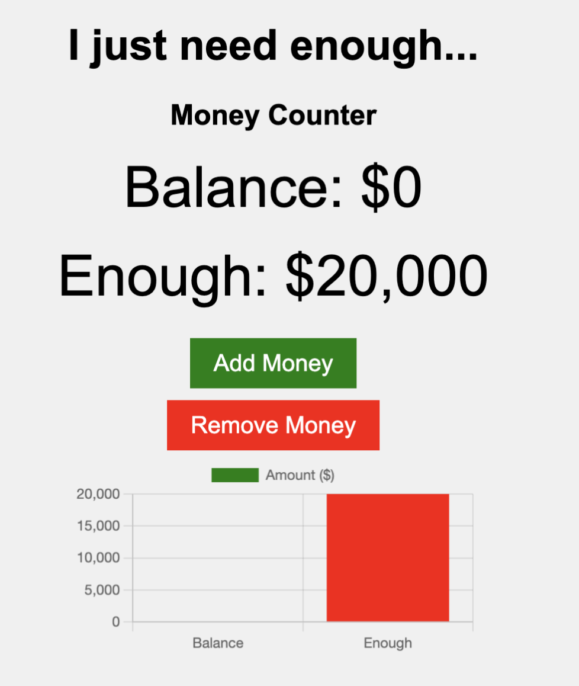
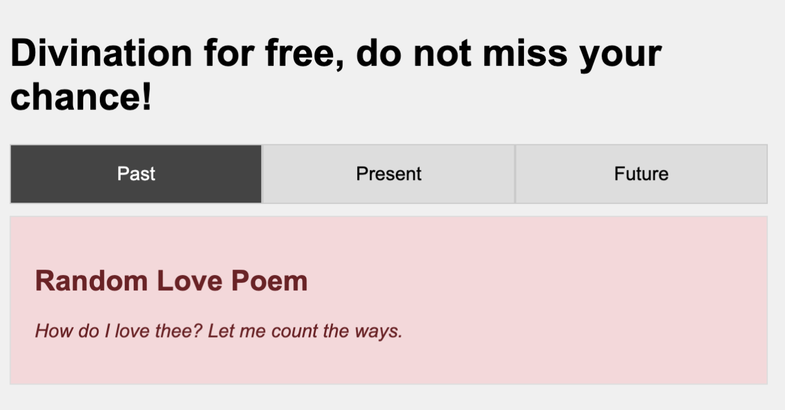
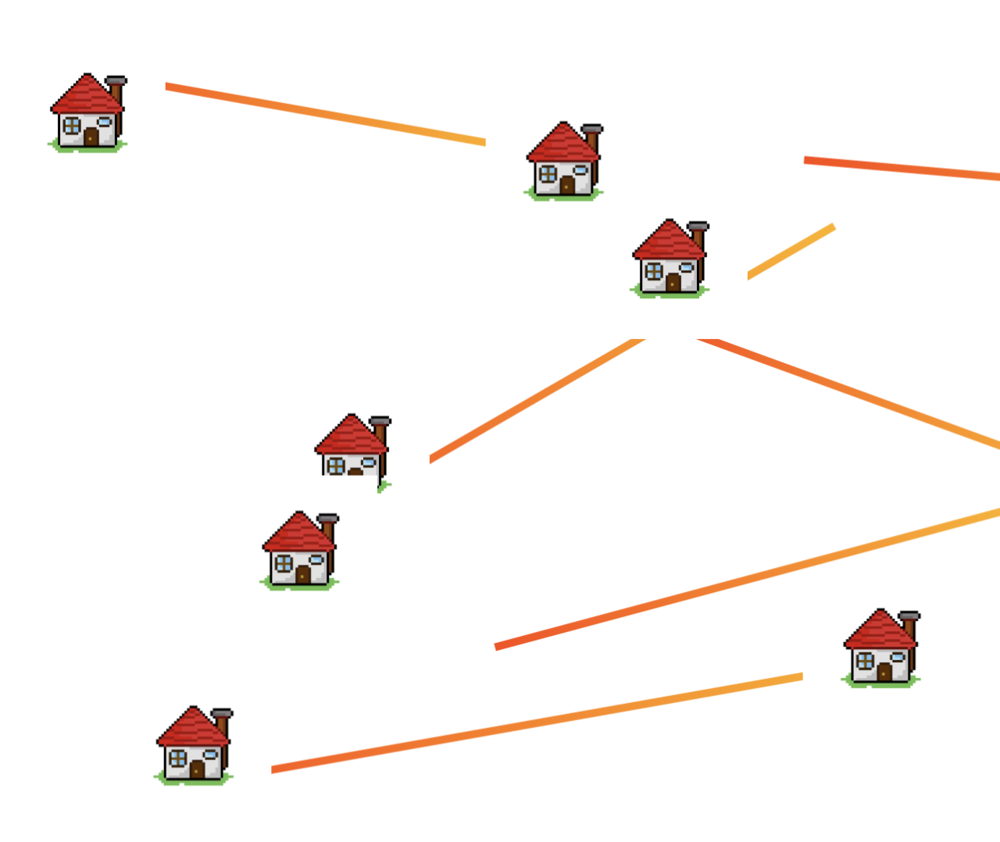
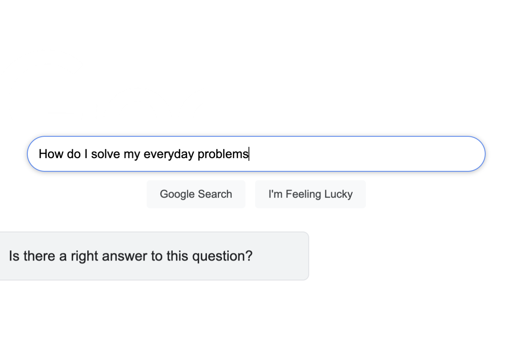
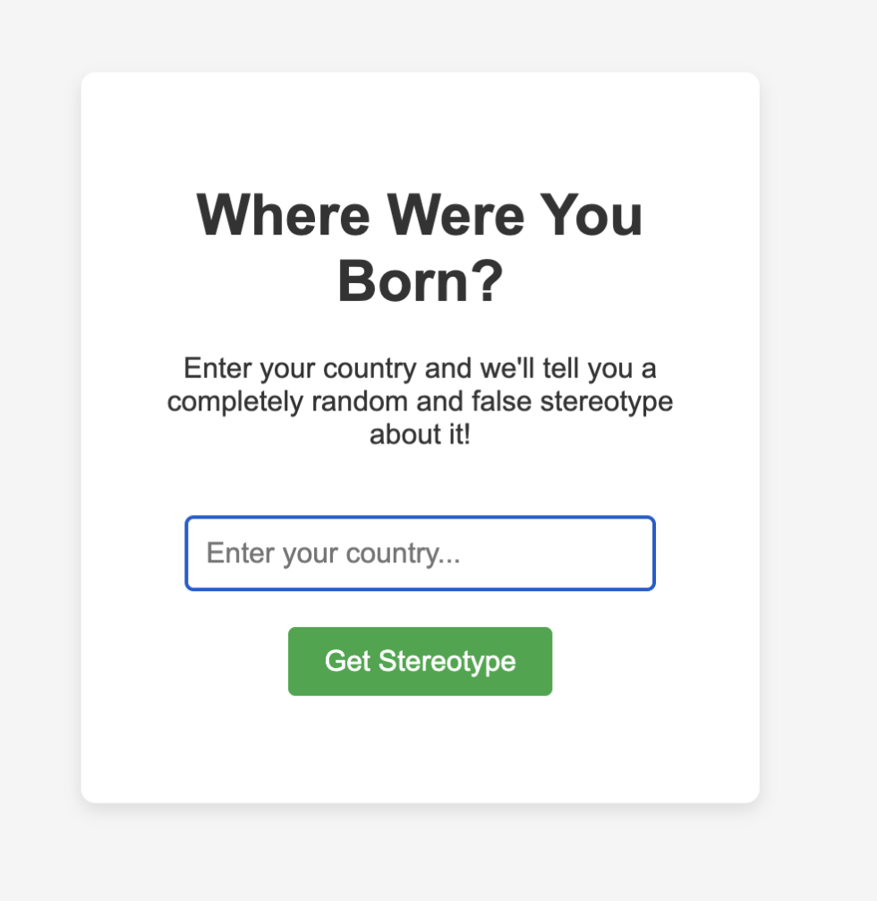

Weirder Webs

What if the web could be weird again? What if websites bloomed like poetry, stuttered like longing, refused clarity like queerness? Weirder Webs is a traveling workshop-performance that invites participants to reclaim agency over the digital. Through a mix of storytelling, myth, HTML, and glitchy generative tools, we build communal constellations of online homes - sites that do not behave, that stammer, that shimmer, that queer the idea of functionality.
The piece began with a provocation:

We are handed tools that surveil us. Can we subvert them into
shelter?
We’re handed platforms that flatten. Can we turn them into
stages?
We’re handed networks built for optimization. Can we rewire
them for intimacy?




In each city (Barcelona, Paris, London, San Francisco) Halim performs an opening ritual rooted in queer migration myths and computational poetics. Then, participants build their own strange web dwellings using Glitch.com, ChatGPT, and collective coding prompts. The results? Websites that flirt, that refuse to load properly, that ask questions rather than answer them. A rain-making interface. A stereotype generator that breaks its own logic. A chameleon that changes its skin based on memory.

At the end of each session, the room steps into a new reality: a queer digital village. All the participant sites are stitched together into a shared web galaxy, visited communally, each contributor a co-founder of a queer poetic web.
But this is more than a workshop. It is a ritual of distributed agency. A reminder that technology can be reclaimed not as a system of extraction, but as a terrain of weird intimacy. That the web, like queerness, resists totality. It loops. It hyperlinks. It flickers. This is not product design. It is digital dissidence. We’re not designing websites. We’re homing. And the question is no longer: Where is home for you? The question is: How do you home?

